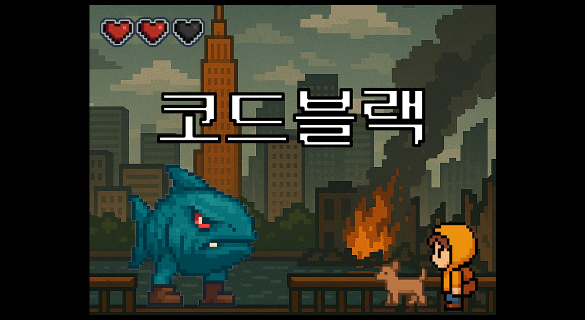

상용 엔진 없이 C++와 SDL2로 렌더링, 오디오, 입력, 충돌, 상태 전이까지 직접 구현한 2D 액션 어드벤처입니다. 인트로부터 7개 스테이지, 엔딩까지 이어지는 페이즈 구조이고, 6번째 스테이지의 보스전을 핵심 전투로 설계했습니다.
내 역할 · 메인 프로그래머로 보스전 전체(패턴, 타이밍, HP UI, 미션 연출, 사운드, 리셋 흐름)를 설계하고 구현했습니다. 오브젝트 풀과 타이머 기반 상태기계(예고 → 잠수 → 공격 → 후퇴)로 30FPS를 안정적으로 유지했고, 스테이지 클래스를 나누고 전환 규칙을 정리해 세 명이 동시에 개발할 수 있게 만들었습니다. 중간·최종 발표도 맡았습니다.
구성 · 7개 맵의 픽셀 게임으로, 피하기·싸우기·타임 어택 등 맵마다 다른 미니게임을 넣었습니다. 세 명이 Git으로 브랜치를 나눠 협업했습니다.